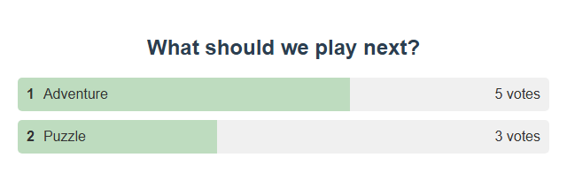

Which tool do I need?
| ma tahan… | Open this in the popup |
|---|---|
| Let chat vote | Graphical Poll → Poll Options |
| Draw a winner with a big reveal | Giveaway Tool → Giveaway Options |
| Pick a random name from a simple list | Wait List / Winner Draw, winner-draw mode on |
| Take viewers in order | Wait List / Winner Draw, winner-draw mode off |
Run a poll in 5 steps
- Avatud Graphical Poll → Poll Options. Set Poll Type juurde Multiple Choice.
- Type a question, like What should we play next?, and the options with commas, like
Adventure, Puzzle. - Määra Vote Matching juurde Exact vote only. Lülitage sisse Enable Poll.
- Copy the poll link into OBS. Viewers send just
1või2(or the option name). - Klõpsake End Poll to stop voting. Note the result, then click Reset Poll for the next one.


Good to know
- Each viewer gets one vote. Turn on Allow multiple votes per user to change that.
- Free-form polls use hashtag votes, like
#yes. Hashtag anywhere counts a hashtag inside a longer message. - Save Current Poll saves the setup, not the results.
Custom colours or fonts: Customize your graphical poll.
Run a giveaway
Esimest korda? Your first giveaway walks through it with screenshots.
- Avatud Giveaway Tool → Giveaway Options.
- Määrake Entry keyword, nagu
!enter. - Vali a Winner card, Name reel, või Community wheel, and one of six styles.
- Klõpsake Preview display, then copy the link into OBS as a Browser Source.
- Klõpsake Open entries. When you're ready, click Draw winner.
- Drawing closes entries for you.
- New round empties the pool and keeps past winners in history. Entries start closed.
- Every entry has the same chance. Donating doesn't help.
- Unless Allow repeat winners is on, a winner can't win again in the same round.
- Only members can enter needs a platform that sends membership info.
More details: odds, saving, and limits
- The preview uses made-up names and never joins your session. The OBS display has no controls.
- Style and title live in the link. Entry rules come from the popup when entries open.
- Displays with the same Giveaway ID show the same pool and winner.
- Paid tickets weight the odds by ticket count.
- One entry per person per platform. The same person on two platforms counts twice.
- Up to 10,000 entries. The wheel shows up to 120 names but picks from everyone.
- Old, replayed, private, bot, and event-only messages are ignored.
- Rounds are saved per session in this browser or app profile. A restart closes open rounds for review. Nothing is erased.
Control it from the API, Stream Deck, or Event Flow
The popup, the HTTP/WebSocket API, and Stream Deck share these actions. No display has to be open. In Event Flow, use Giveaway / Tickets (details).
| Tegevus | Mida see teeb |
|---|---|
startgiveaway | Open or resume entries. Optional value: {"giveawayId":"default","config":{"keyword":"!enter","match":"exact","membersOnly":false,"removeWinner":true}}. Without config, it keeps the round's rules (or popup settings for a new round). |
closegiveaway | Close entries. Keeps the pool. |
drawgiveaway | Close entries and pick a winner. Errors if nobody entered. |
resetgiveaway | New empty, closed round. Old winners go to history. Refund paid tickets first. |
getgiveawaystate | Get the entry count, open or closed, rules, and recent winners. |
{"action":"drawgiveaway","get":"draw-1"}
Stream Deck (protocol 2) uses the same names. Its reply is about the giveaway, not whether OBS shows it.
The old standalone community wheel (no managed in the link) keeps its own pool and ignores these actions.
Quick winner draw from the waitlist
- Avatud Wait List / Winner Draw and expand its settings. Turn on the trigger and set a command, like
!join. - Lülitage sisse Configure as winner-draw mode instead of queue. Copy the updated link into OBS.
- Tell viewers the command.
- When entries are done, click Stop entries, then Select winner.
- Klõpsake Download list to keep the entries, then Reset draw to clear them.
- Open entriesViewers type !join
- Stop entriesClose the pool
- Select winnerShow the pick
- Reset drawClear for next time
Run a viewer queue
Same setup as the winner draw, but with winner-draw mode off. Viewers join with your command.
| Button | Use it to |
|---|---|
| Highlight top entry | Show who's next. |
| Remove top entry | Move on after their turn. |
| Select a name | Pick someone at random instead of in order. |
| Stop entries | Close the queue to new people. |
| Download list / Reset queue | Save a copy (TSV file), then clear it when you're done. |
Allow removed users to rejoin decides if people can get back in line.
Chat commands for mods
Lülitage sisse Enable waitlist control commands so mods, the host, and admins can run the queue from chat.
!wlstop · !wlremove · !wlreset · !wlpick · !wlhighlight
Some take a number, like !wlpick 3 või !wlremove 2.
Test first, then fix problems
Before going live, send a few testsõnumid from different made-up users, and check OBS shows the result.
| Probleem | Proovi seda |
|---|---|
| No votes count | Check Enable Poll is on, the poll isn't ended, the vote matches exactly, and they haven't voted already. |
| No one gets in | Check the trigger is on, the command is exact, entries aren't stopped, and members-only isn't blocking them. |
| A count shows but no list | That's winner-draw mode. It shows a pool and winners, not a queue. |
| OBS shows something different | Paste the link into OBS again and check the session and password. Don't run two differently set-up poll pages. |
Physical buttons: see Stream Deck setup and the OBS control dock.